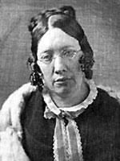

|

|

|
|
|
Author and activist Catharine Esther Beecher was born in
East Hampton, Long Island, the eldest of four daughters and
of the eight surviving children of Lyman and Roxana (Foote)
Beecher. Her father was a Presbyterian minister who became
famous during Catharine's girlhood for his defense of
evangelical faith, his revivals, and his work for temperance
and other moral reform movements. In 1810 the Beechers moved
to Litchfield, Connecticut, then something of a cultural and
educational center. The family worshiped the unselfish
goodness of Roxana Beecher, but Catharine was closer to her
zestful and demanding father. Delicate in health and of a
difficult temper, she relied upon his indulgent tenderness.
The bond between them was deep and lasting. "I can not hear
him," she wrote as an adult, "without its making my face
burn and my heart beat."
As the oldest child, Catharine assumed many
responsibilities and became accustomed to dominance. When
her mother died, the sixteen-year-old Catharine felt she had
to take her place in the lives of the younger children. When
her father married the elegant Harriet Porter in 1817, it
was Catharine who penned the children's dutiful letter of
welcome. Three more sons and one daughter were born of this
second marriage. The large household, with its aunts and
cousins, boarders and servants, with its talk of the
Christian Observer, of Hannah More, Maria Edgeworth,
and Sir Walter Scott was the center of her life. Though she
briefly attended Sarah Pierce's school in Litchfield, she
always regarded her home training in housekeeping, cooking,
sewing, and morality as her true education, indeed, her
idyllic memory of the small-town New England household
underlay her vigorous campaigns for the revision of female
education.
In 1821, as a schoolteacher in New London, Connecticut,
Beecher attracted the attention of a diffident but brilliant
young mathematics professor from Yale, Alexander Metcalf
Fisher. Lyman Beecher, evidently unperturbed that Fisher
lacked the personal knowledge of grace which evangelical
faith held crucial for salvation, prodded Catharine to
accept his proposal. They became engaged in 1822, but Fisher
died at sea four months later. Seeing in the death a divine
judgment upon her idolatrous love, Catharine Beecher
renounced worldly things. "I feel it is better I should go
mourning all my days, than to live as I have done all my
past life." She alternately lacerated herself and accused
her father's God for damning men condemned by His own
decree. Though she eventually joined Boston's new
evangelical Hanover Street Church, to which her father was
called in 1826, she did not accept Calvinism, and in a long
series of essays and books, including Letters on the
Difficulties of Religion (1836) and Common Sense
Applied to Religion (1857), she maintained with
increasing force that men were not naturally depraved and
that they could, through education, be made perfect. Toward
the end of her life she explicitly rejected the
"soulwithering" doctrines of Presbyterianism and joined the
Episcopal Church.
To Lyman Beecher, Fisher's death revealed that God had
elected Catharine for a vocation beyond the ordinary lot of
women, and dutifully she gathered her energies for
benevolent service. Settling in Hartford, where their
brother Edward was master of a grammar school, Catharine and
her sister Mary in 1823 opened a girls' school. Four years
later it was incorporated as the Hartford Female Seminary.
Her father was encouraging but exigent. "I should be ashamed
to have you open, and keep only a commonplace, middling sort
of school," he wrote. Catharine shared these high
aspirations, and her unremitting search for "a more enlarged
and comprehensive boundary of exertion" fired her with such
fierce energy that other people often found her oppressive.
(At sixty she wrote that every minute of her adult life had
been devoted to her fellow men.)
Highly critical of the typical female seminary of the
day, with its numerous courses poorly taught, its rote
learning, and its neglect of physical exercise, Beecher
instituted calisthenics and correlated courses that stressed
general principles. In "Female Education," an article
published in the American Journal of Education (April
and May 1827), and Suggestions Respecting Improvements in
Education, a fund-raising pamphlet of 1829, she proposed
that schools for women be endowed, that teachers be assigned
limited fields, and that girls be trained in the arts of
teaching and domestic science. Her strenuous dedication
exacted a toll, and in 1828 she experienced an intolerable
restlessness and such mental confusion as seemed "like
approaching insanity." Resigning her position in 1831, she
accompanied her father the following year to Cincinnati,
where he assumed the presidency of the Lane Theological
Seminary and she opened a new school, the Western Female
Institute.
Though still far from well, suffering in 1835 a serious
nervous collapse, she carried on with her accustomed energy,
not only looking to the interests of her school but also
publishing several elementary textbooks, collaborating with
the Rev. William H. McGuffey on his Eclectic Fourth Reader
(1837), and joining actively in the Cincinnati temperance
movement. She was cool to the rising abolitionist tide,
contending in An Essay on Slavery and Abolitionism, with
Reference to the Duty of American Females
(1837)-addressed to Angela Grimke-that any activity which
"throws woman into the attitude of a combatant, either for
herself or others," lay outside "her appropriate sphere."
From her vantage point in the West, Catharine Beecher
became convinced that the major challenge facing the nation
was the large number of children who were growing up beyond
the reach of schools. The collapse of her Western Female
Institute in 1837, for lack of support, both deepened her
awareness of the problem and freed her to do something about
it. Throughout the 1840's she traveled incessantly, seeking
through lectures, articles, books, and a personal canvassing
of her friends to persuade the public of the urgent need for
sending teachers to the West and for establishing normal
schools in the newly settled regions. In The Duty of
American Women to Their Country (1845) she argued that
by neglecting its two million unschooled children, America
was courting bloodshed and anarchy. Her pleas fell on
responsive ears. In February 1846 the ladies of Boston's
Mount Vernon Church formed a society for "sending pious
female teachers to the west," and in April 1847 William
Slade, formerly governor of Vermont, impressed by Beecher's
appeal, founded in Cleveland the Board of National Popular
Education, with himself as general agent and Beecher in
charge of selection, training, and placement. Ultimately,
over 500 New England schoolteachers were sent west by these
two groups. Beecher and Slade soon began to clash over
policy, however. He was concerned primarily with recruiting
teachers in the East, while she was increasingly interested
in establishing endowed nondenominational female colleges in
the West where local girls could be trained both as teachers
and as homemakers. By 1848 the two had parted company, and
in 1852 Beecher organized the American Woman's Educational
Association to accomplish her program. Through her efforts
schools were begun in Milwaukee, Wisconsin, Dubuque, Iowa,
and Quincy, Illinois. Only one, however, the Milwaukee
Normal Institute (later Milwaukee-Downer College), long
survived.
Catharine Beecher lived by her pen, supporting her
various causes in part through royalties, and she was
probably more influential as a writer than through the
schools she founded. A Treatise on Domestic Economy
(1841) and its sequel, The Domestic Receipt Book
(1846), didactic, homiletic, and emphatic, went through many
editions. One of the most popular revisions of the Treatise,
published in 1869 as The American Woman's Home, was
prepared in collaboration with her sister Harriet Beecher
Stowe. In these books the curious or baffled housewife found
practical instructions on cooking, family health, infant
care, and children's education, as well as general
observations on proper home management. The ideal set forth
is that of a thrifty household, with wife, daughters, and
servants working together and family comfort never
sacrificed to "elegance or fashion."
No Beecher, however, could rest content merely as a
purveyor of household hints. Though Catharine Beecher had
rejected her father's theology, she, no less than her seven
brothers who became ministers, inherited his apocalyptic
ardor. In numerous magazine articles and in such books as
The Evils Suffered by American Women and American
Children: The Causes and the Remedy (1846) she assumed
the role of teacher and minister to her sex. All her
writings on women-as, indeed, all her educational
reforms-sprang from an indignant sense of the disparity
between woman's true role and her actual condition as
exploited factory worker, worn and incompetent housewife, or
corseted and indolent creature of wealth. Inadequate air and
exercise, "murderous fashions," and irrelevant studies, she
believed, had so ruined women's health that most of them
dreaded and some sinfully avoided maternity. Such children
as were born often suffered severe mental and physical
damage as a result of their mothers' ignorance of proper
hygiene and child-rearing principles.
Her crusade was founded upon the belief that these evils
were remediable. She demanded a change in the "caste" system
which left women untrained for, and ashamed to perform,
their proper work. In all her writings, she sought to
replace the travesties of womanhood-whether the "nervous,
sickly, and miserable" housewife or the "fainting, weeping,
vapid, pretty plaything"-with an energetic and benevolent
figure who would joyfully accept as a sacred vocation the
opportunity to implant "durable and holy impressions" upon
the "immortal minds" placed in her care. Beecher portrayed
women as the saviors of society, like Christ in that their
power sprang from humility and sacrifice. But, though she
pressed the sacrificial role upon her feminine readers, she
also-with more strategy than consistency- tempted them with
power, envisioning "a 'Pink and White Tyranny' more
stringent than any earthly thralldom." She had little
sympathy with the feminism of the later nineteenth century
which resulted in agitation for the vote and in the
establishment of colleges like Smith and Vassar, for both
seemed to her a repudiation of woman's peculiar domestic
obligation. On the suffrage question she and her sister
Harriet thus sided against their brother Henry Ward and
their half sister Isabella Beecher Hooker.
Catharine Beecher was plain of appearance, with heavy
features, dark hair worn in lank ringlets, and a sallow
complexion. All her life she suffered recurrent nervous
collapses and attacks of sciatica which frequently forced
her, though never for long, to lay aside her varied
pursuits. She sought relief in at least thirteen different
health establishments of varying persuasions, but, as she
dryly noted, "Owing chiefly to my own knowledge and caution,
] was not injured ... by any." In 1866 she taught briefly
in Dio Lewis' gymnastic school for girls in Lexington,
Mass., and in 1870-71 she returned for a few months as
principal of the Hartford Female Seminary. In 1877, after
two years of residence with her brother Edward in Brooklyn,
N.Y., she went to live with her half brother Thomas in
Elmira N.Y., where she took the water cure and lectured to
the girls at Elmira College. She died of apoplexy in
Elmira in 1878, at seventy-seven years of age, and was
buried there in Woodlawn Cemetery.
Source: Edward T. James and Janet Wilson James, eds., Notable American Women:
A Biographical Dictionary (Cambridge, MA: Harvard University Press, 1974), 121-124.
|